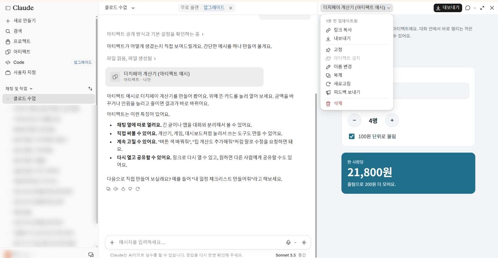

2차시 · 1번 보조 자료
오른쪽에 뜬 아티팩트, 윗줄 단추가 무엇을 하는지 번호로 알아봐요.
그림의 번호나 아래 설명을 누르면 서로 표시됩니다.

| 링크 복사 | 다른 사람에게 보낼 주소 복사 — 2차시 5번에서 씁니다 |
|---|---|
| 내보내기 | 파일로 내 컴퓨터에 받기 (윗줄 내보내기 단추와 같아요) |
| 고정 | 왼쪽 '아티팩트' 목록 맨 위에 붙여 두기 |
| 이름 변경 | 제목 바꾸기 — 나중에 찾기 쉽게 |
| 복제 | 사본 만들기 — 원본은 두고 따로 고쳐 볼 때 |
| 새로고침 | 화면이 멈추거나 하얗게 나올 때 |
| 아티팩트 설치 · 피드백 보내기 | 오늘은 쓰지 않아요 |
| 삭제 | 빨간 글씨 — 되돌릴 수 없어요. 누르지 않기 |